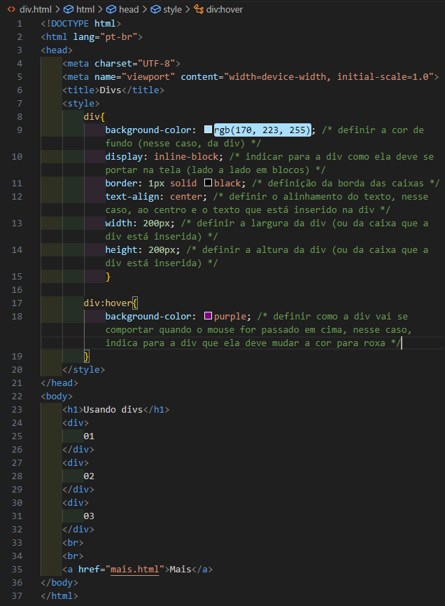
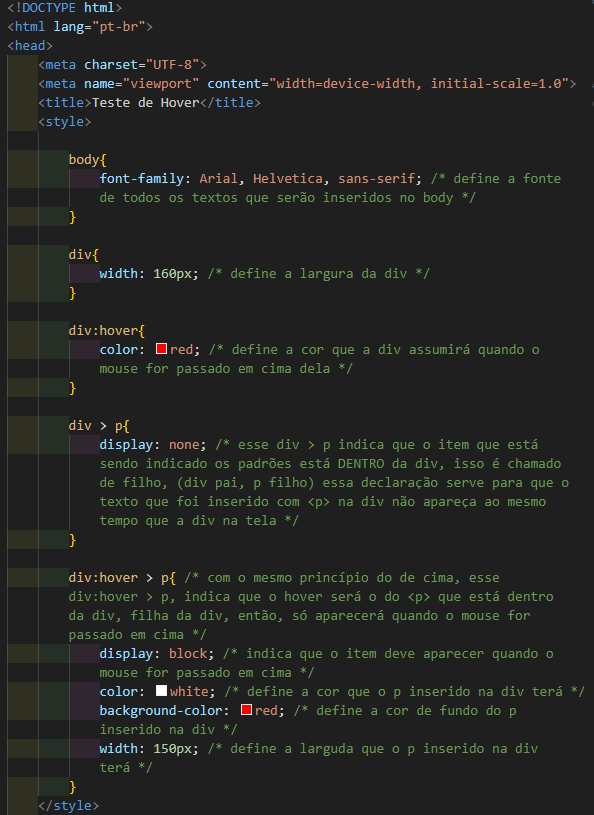

01
02
03
No HTML, temos a tag "<div></div>", ela não tem uma função específica, serve apenas para demarcar um espaço qualquer dentro da nossa página. Podemos escrever textos dentro das tag div's... Como padrão, se tiver mais de uma, as div's ficam dispostas uma em cada linha, uma embaixo da outra, sendo que elas ocupam uma área que pega a largura inteira do navegador, de ponta à ponta. Exemplo:
<body>
<div id="d1">01</div>
<div id="d2">02</div>
<div id="d3">03</div>
</body>
configuração das divs nas CSS
↓
div{
display: inline-block;
background-color: lightgrey;
border: 1px solid black;
text-align: center;
height: 200px;
width: 200px;
}
Podemos mudar a altura e largura das div's com as Propriedades de Estilo "Height" e "Width", também conseguimos mudar a posição dos textos nas div's com a Propriedade text-align, sendo que podemos adicionar bordas às div's com a Propriedade "border" com o valor "solid"
Nota: Ao utilizar a Propriedade de Estilo "border", devemos primeiro inserir o valor da espessura da borda em px, depois o tipo de borda (ex: solid) e posteriormente a sua cor. Exemplo de shorthand para bordas em CSS:
" border: 1px solid black; "
Como foi dito anteriormente, por padrão as div's ficam alinhadas uma em cima da outra, mas se quisermos que fiquem uma do lado da outra, devemos usar a Propriedade de Estilo "display" com o valor "inline-block", que seria um alinhamento de bloco em linha, assim fica tudo na mesma linha.
Agora, referente à Pseudo-classes , elas precisam e são relativas a um elemento ou uma classe, elas são relacionadas ao ESTADO de um determinado ELEMENTO . No CSS, as Pseudo-classes são representadas por "dois pontos" ( : )
Para usar as funcionalidades de Pseudo-classes, no código CSS, devemos abrir um seletor personalizado para o elemento que queremos determinar um estado, digitando "dois pontos" ( : ) e especificando o estado desejado, abrindo chaves posteriormente.
Alguns exemplos de ESTADOS de elementos (Pseudo-classes) são: Ativo, Marcado, Vazio, Habilitado e etc.
Existe um estado (Pseudo-classe) chamado "hover" (hover é uma Pseudo-classe que é compatível com vários elementos), que significa: "quando eu passar o mouse por cima", quando estamos com alguma coisa por cima dele.
Exemplo de elemento com Pseudo-classe abaixo:
div:hover {
background-color: brown;
}
Uma coisa legal que pode ser feita é inserir parágrafos (<p>) dentro de div's. Isso é enquadrado como um elemento dentro de outro elemento, e nesses casos, o elemento que está dentro é considerado " filho " ( children ) daquele que está fora (pai).
Em seletores CSS, se quisermos personalizar os elementos que estão dentro de outros elementos ( children ), devemos indicar o elemento "pai" e usar o símbolo de maior " > " para indicar o elemento filho ( children ) imediato a ele. Exemplo:
div > p {
display: none;
}
A propriedade de estilo " display " com o valor " none " do exemplo acima faz com que os parágrafos que estejam dentro de div's ( ">" children ) fiquem com sua exibição oculta. Algo interessante que pode ser feito após isso, utilizando a Pseudo-Classe " hover ", é fazer com que o texto escondido apareça ao passarmos o mouse em cima da div.
Para isso, abrimos um seletor para a div com a Pseudo-Classe hover (div:hover) e indicamos o seu filho (p) com o símbolo " > ", exemplo: " div:hover > p { " e inserimos dentro a Propriedade de Estilo " display " com o valor " block ". Dessa forma, ao passarmos o mouse sobre a div, o texto escondido contido na tag "p" filho irá aparecer. Exemplo:
div:hover > p {
display: block;
color: white;
background-color: red;
width: 300px;
}


Teste de Hover
Voltar à página inicial